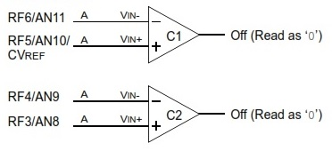
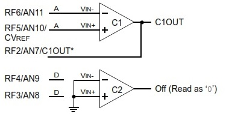
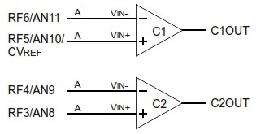
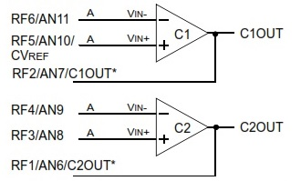
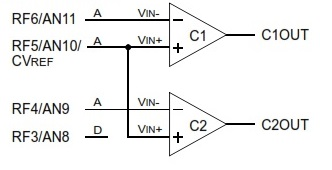
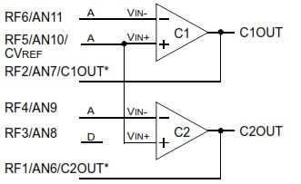
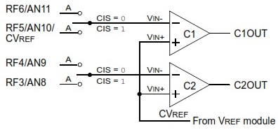
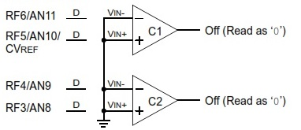

The dual comparator module contains two comparators that can be configured in one of the 8 modes. The analog inputs to the comparators can be selected from multiple analog inputs multiplexed with GPIO pins RF1 to RF6 as well as on-chip comparator reference voltage.
The digital outputs are available at the output pins and/or can be read from the control registers depending on the mode the comparators are configured in.
The modes that the comparators can be configured in are listed below :
-
Comparator Outputs Disabled
The outputs of both the comparators are disabled in this mode. The outputs are neither available on the pins nor through the control register output bits.

-
One independent comparator with output
First comparator functions normally with for which the negative and positive inputs can be given through the C1IN- and C1IN+ pins and the output is available on C1OUT pin.
The inputs of the other comparator are grounded.

-
Two independent comparators
The comparators function independently and their respective outputs can be read through the bits present in the control register.

-
Two independent comparators with outputs
The comparators function independently and their respective outputs can be read through the bits present in the control register and they are also available on the output pins C1OUT and C2OUT.

-
Two common reference comparators
The positive inputs of both the comparators are connected. The comparators' outputs can be read through the bits present in the control register.

-
Two common reference comparators with outputs
The positive inputs of both the comparators are connected. The outputs are available in the registers bits as well as on C1OUT and C2OUT pins.

-
Four inputs multiplexed to 2 comparators
The positive inputs are tied together and come from CVREF module. The negative inputs to the comparators are multiplexed between CxIN- and CxIN+ pins and it can be configured through the comparator input combo box provided in the UI.

-
Comparators off
Both the comparators are off.
